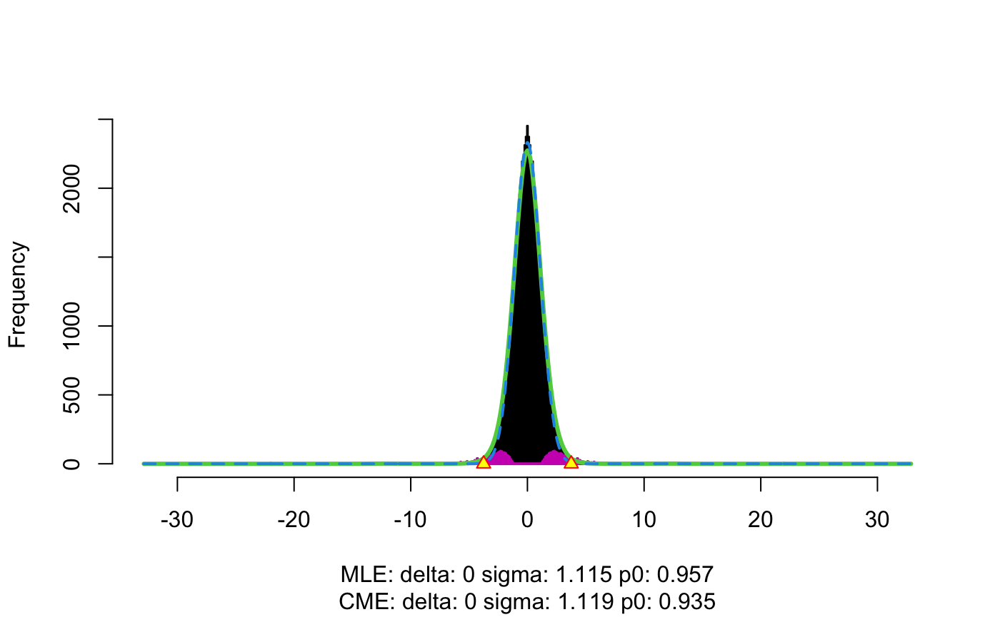
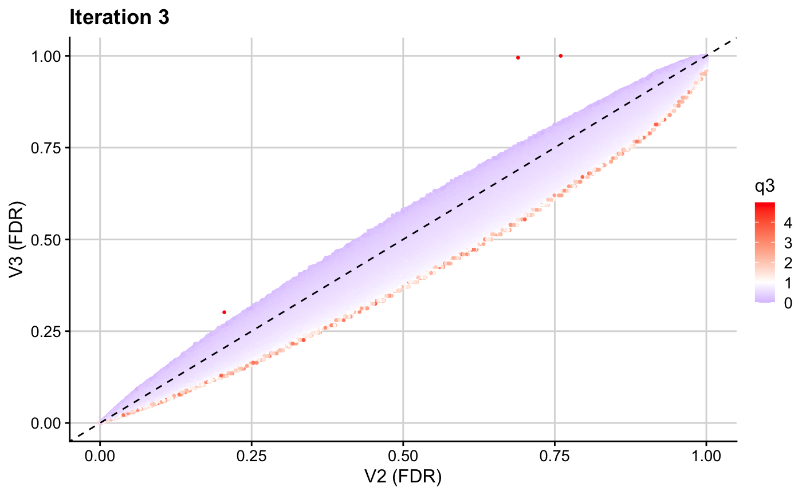

T1D Application
t1d_app.RmdIn this vignette, we walk through an example to illustrate how the fcfdr R package can be used to leverage various functional genomic data with GWAS \(p\) values for type 1 diabetes (T1D) to find new associations. This application takes about 30 minutes to run.
The data required for this example is available to download within the fcfdr R package and includes:
GWAS \(p\)-values for T1D (Onengut-Gumuscu et al. (2015), https://www.nature.com/articles/ng.3245) downloaded from the GWAS Catalog (https://www.ebi.ac.uk/gwas/publications/25751624)
GWAS \(p\)-values for Rheumatoid Arthritis (RA) (Eyre et al. (2012), https://www.nature.com/articles/ng.2462) downloaded from the GWAS Catalog (https://www.ebi.ac.uk/gwas/publications/23143596)
Binary measure of SNP overlap with transcription factor binding site (TFBS), derived from merging all DNaseI digital genomic footprinting (DGF) regions from the narrow-peak classifications across 57 cell types (https://www.nature.com/articles/nature11247; https://doi.org/10.1016/j.ajhg.2014.10.004). SNP annotations were downloaded for all 1000 Genomes phase 3 SNPs from the LDSC data repository (https://storage.googleapis.com/broad-alkesgroup-public/LDSCORE/1000G_Phase3_baselineLD_v2.1_ldscores.tgz) and the binary
DGF_ENCODEannotation was extracted for all T1D SNPs in our analysis.Fold-enrichment ratio of H3K27ac ChIP-seq counts relative to expected background counts in naive CD4+ T helper cells (https://www.nature.com/articles/nbt1010-1045). Downloaded from https://egg2.wustl.edu/roadmap/data/byFileType/signal/consolidated/macs2signal/foldChange/E043-H3K27ac.fc.signal.bigwig.
First, we download the data:
set.seed(1)
library(fcfdr)
data(T1D_df, package = "fcfdr")
head(T1D_df)
#> rsid chrom pos other_allele effect_allele p
#> 1 1kg_10_59614461 10 59944455 C A 0.8245356
#> 2 1kg_14_80445068 14 81375315 G A 0.3503642
#> 3 1kg_14_87503642 14 88433889 A G 0.1048239
#> 4 1kg_2_207220639 2 207512394 G C 0.9821215
#> 5 1kg_5_173458951 5 173526345 C G 0.4549943
#> 6 ccc-2-102079765-A-G 2 102713333 ? ? 0.4395651
#> DGF_ENCODE Th_H3K27ac RA_p ldak_weight maf
#> 1 0 0.59652 0.1553 0.900318 0.1413714
#> 2 0 0.66973 0.6732 0.000000 0.1735724
#> 3 0 0.42419 0.5976 0.000000 0.3747790
#> 4 0 0.00000 0.8109 0.000000 0.4781095
#> 5 0 0.00000 0.7110 0.829307 0.3555777
#> 6 0 0.89836 0.3508 0.816463 0.4957808In this application we leverage GWAS \(p\)-values for RA (q1), binary SNP overlap with TFBS (q2) and H3K27ac counts in naive CD4+ T helper cells (q3) with GWAS \(p\)-values for T1D (orig_p) to generate \(v\)-values.
orig_p <- T1D_df$p
chr <- T1D_df$chrom
q1 <- T1D_df$RA_p
q2 <- T1D_df$DGF_ENCODE
q3 <- log(T1D_df$Th_H3K27ac+1)The data frame also contains a column of LDAK weights for each SNP (http://dougspeed.com/calculate-weightings/). An LDAK weight of zero means that the signal is (almost) perfectly captured by neighbouring SNPs and so we use the subset of SNPs with non-zero LDAK weights as our independent subset of SNPs.
ind_snps <- which(T1D_df$ldak_weight != 0)We are now ready to use the fcfdr R package to generate \(v\)-values. Firstly, we generate \(v\)-values leveraging GWAS \(p\)-values for RA.
iter1_res <- flexible_cfdr(p = orig_p,
q = q1,
indep_index = ind_snps)
v1 <- iter1_res[[1]]$vThe resultant \(v\)-values for this first iteration (v1) are then used in the next iteration to leverage binary data on SNP overlap with TFBS. Note that the binary cFDR function implements a leave-one-chromosome out procedure and therefore requires the chromosomes for each SNP rather than an independent subset.
iter2_res <- binary_cfdr(p = v1,
q = q2,
chr = chr)
v2 <- iter2_res$vThe resultant \(v\)-values for this second iteration (v2) are then used in the next iteration to leverage H3K27ac counts.
iter3_res <- flexible_cfdr(p = v2,
q = q3,
indep_index = ind_snps)
#> Warning: glm.fit: fitted rates numerically 0 occurred
#> Warning in locfdr(c(zp_ind, -zp_ind), bre = c(kpq$x[-length(kpq$x)] +
#> diff(kpq$x)/2, : f(z) misfit = 3.9. Rerun with increased df
v3 <- iter3_res[[1]]$vWe then create a final data frame for the fcfdr results. Note that the sign is flipped for \(q2\) and \(q3\). This is because these are negatively correlated with p and the flexible cFDR software automatically flips the sign of q to ensure that low p are enriched for low q.
res <- data.frame(orig_p, q1 = iter1_res[[1]]$q, q2 = as.factor(iter2_res$q), q3 = iter3_res[[1]]$q, v1, v2, v3)
head(res)
#> orig_p q1 q2 q3 v1 v2 v3
#> 1 0.8245356 0.1553 0 0.4678263 0.7587319 5.633699e-06 5.590807e-06
#> 2 0.3503642 0.6732 0 0.5126619 0.4137071 3.785206e-01 3.789268e-01
#> 3 0.1048239 0.5976 0 0.3536032 0.1368236 9.090646e-01 9.033876e-01
#> 4 0.9821215 0.8109 0 0.0000000 0.9930016 7.273575e-01 7.188404e-01
#> 5 0.4549943 0.7110 0 0.0000000 0.5224101 3.464855e-01 3.368882e-01
#> 6 0.4395651 0.3508 0 0.6409904 0.4457289 3.098237e-02 3.163994e-02We inspect the resultant \(v\)-values after each iteration by plotting these against the values used as p in that iteration.
library(ggplot2)
library(cowplot)
mid1 <- median(res$q1)
ggplot(res, aes(x = orig_p, y = v1, col = q1)) + geom_point(cex = 0.5) + theme_cowplot(12) + background_grid(major = "xy", minor = "none") + geom_abline(intercept = 0, slope = 1, linetype="dashed") + xlab("P") + ylab("V1") + ggtitle(paste0("Iteration 1")) + scale_color_gradient2(midpoint = mid1, low = "blue", mid = "white", high = "red", space = "Lab")
ggplot(res, aes(x = v1, y = v2, col = q2)) + geom_point(cex = 0.5) + theme_cowplot(12) + background_grid(major = "xy", minor = "none") + geom_abline(intercept = 0, slope = 1, linetype="dashed") + xlab("V1") + ylab("V2") + ggtitle(paste0("Iteration 2"))
mid3 <- median(res$q3)
ggplot(res, aes(x = v2, y = v3, col = q3)) + geom_point(cex = 0.5) + theme_cowplot(12) + background_grid(major = "xy", minor = "none") + geom_abline(intercept = 0, slope = 1, linetype="dashed") + xlab("V2") + ylab("V3") + ggtitle(paste0("Iteration 3")) + scale_color_gradient2(midpoint = mid3, low = "blue", mid = "white", high = "red", space = "Lab")
We can also plot the original \(p\)-values for T1D against the final adjusted \(v\)-values.
mid1 <- median(res$q1)
ggplot(res, aes(x = orig_p, y = v3)) + geom_point(cex = 0.5, alpha = 0.5) + theme_cowplot(12) + background_grid(major = "xy", minor = "none") + geom_abline(intercept = 0, slope = 1, linetype="dashed", col = "red") + xlab("P") + ylab("V3") + ggtitle(paste0("V3 against original p-values"))
ggplot(res, aes(x = -log10(orig_p), y = -log10(v3))) + geom_point(cex = 0.5, alpha = 0.5) + theme_cowplot(12) + background_grid(major = "xy", minor = "none") + geom_abline(intercept = 0, slope = 1, linetype="dashed", col = "red") + xlab("P (-log10)") + ylab("V3 (-log10)") + ggtitle(paste0("V3 against original p-values (-log10)")) + coord_cartesian(ylim = c(0,10), xlim = c(0,10))Finally, we find that flexible cFDR identifies newly FDR significant SNPs that have relatively small GWAS \(p\)-values for rheumatoid arthritis, are more likely to be found in genomic regions where transcription factors may bind and have relatively high H3K27ac counts in a T1D relevant cell type.
fdr_thr <- 4*10^-6
length(which(v3 < fdr_thr & orig_p > fdr_thr))
#> [1] 2285
median(T1D_df$RA_p[which(v3 < fdr_thr & orig_p > fdr_thr)])
#> [1] 0.4293
median(T1D_df$RA_p)
#> [1] 0.4228
mean(T1D_df$DGF_ENCODE[which(v3 < fdr_thr & orig_p > fdr_thr)])
#> [1] 0.2420131
mean(T1D_df$DGF_ENCODE)
#> [1] 0.2347241
median(T1D_df$Th_H3K27ac[which(v3 < fdr_thr & orig_p > fdr_thr)])
#> [1] 0.63101
median(T1D_df$Th_H3K27ac)
#> [1] 0.63626